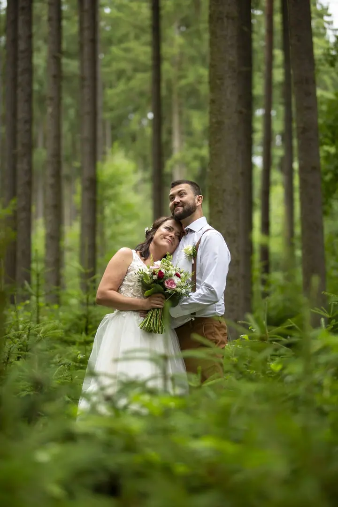
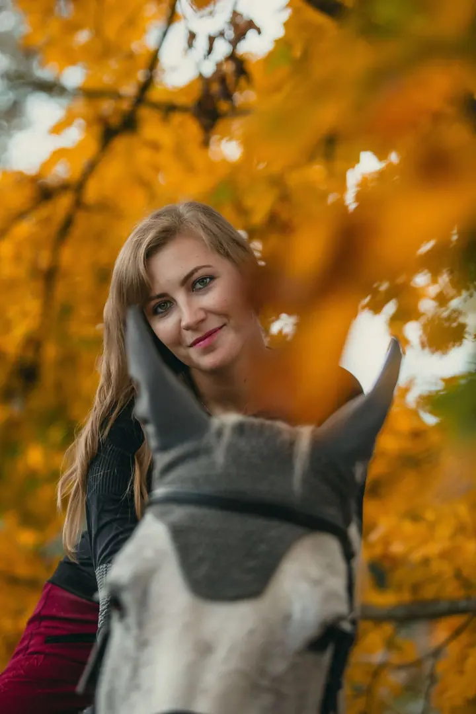
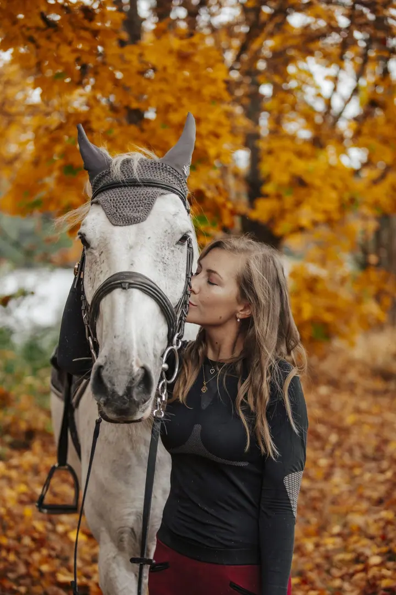
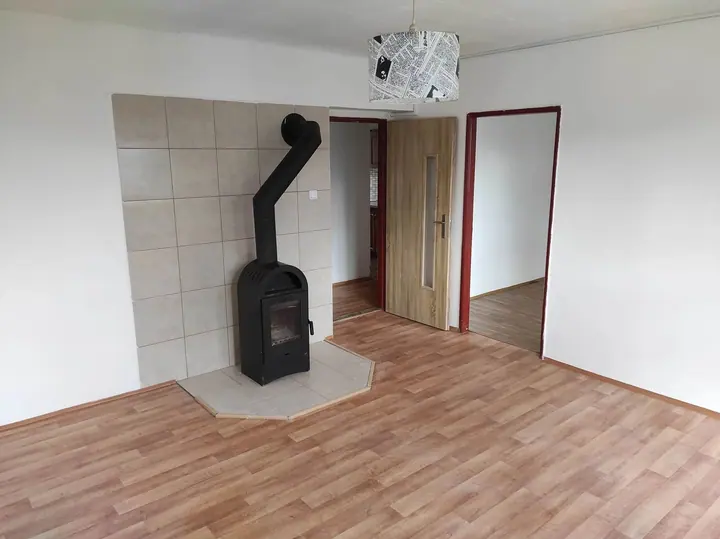
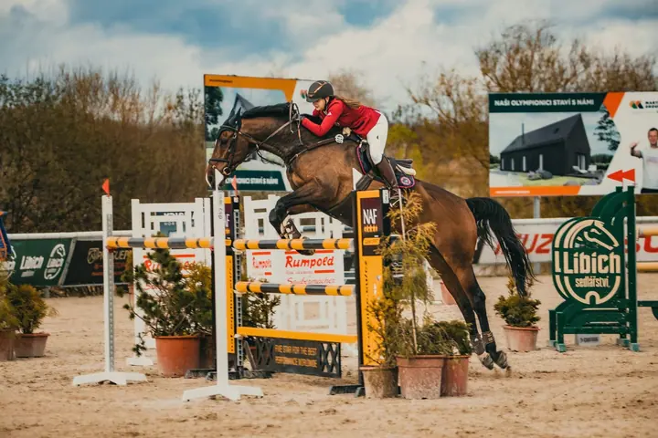

jedna
Svatební focení
Fotím většinou formou reportáže a zajímavých momentů, od obřadu a portrétů až po celý den. Vybrat si můžete celodenní nebo půldenní focení, případně jen obřad a portrét, a tištěné fotografie i doprava jsou vždy v ceně.

Svatební fotograf a kameraman · Březnice, Příbram

Jmenuji se Tomáš Mokrý a pocházím z Březnice nedaleko Příbrami. Fotím hlavně svatby a párová focení, většinou formou reportáže a zajímavých momentů, a k tomu natáčím svatební videa. Rád uvolním atmosféru, ale umím zůstat i skoro neviditelný v ústraní.
Více o mně
Co dělám
jedna
Fotím většinou formou reportáže a zajímavých momentů, od obřadu a portrétů až po celý den. Vybrat si můžete celodenní nebo půldenní focení, případně jen obřad a portrét, a tištěné fotografie i doprava jsou vždy v ceně.
dvě
Společné focení ve dvou, venku v přírodě a v klidu. Rád uvolním atmosféru, takže nemusíte umět pózovat.
tři
Portrétní focení venku, klidně i s vaším zvířetem. Rád vyjdu vstříc vašim nápadům a přáním.
Natáčím krátký svatební reel na 3 až 5 minut, ale i delší video až do 15 minut. Nabízím také záběry z dronu.

Umím být neviditelný, ale legraci nezkazím.

Za objektivem
Fotografování je pro mě velkým životním koníčkem. Věnuji se mu zhruba pět let, svatbám z toho asi tři roky. Mám rád komunikaci s lidmi a na focení se snažím, aby bylo hlavně příjemně.
Na svatbě fotím většinou formou reportáže. Umím být neviditelný, ale žádnou legraci nezkazím. Když budete chtít, rád vám pomůžu i s organizací dne. Kromě fotek natáčím krátký reel nebo delší video, fotím s dronem a půjčuji instax, fotokoutek s rekvizitami, projektor s plátnem i prskavky na prskavkový tanec.
Vždy se snažím vyjít vám co nejvíc vstříc podle vašich přání. Za vámi jsem ochoten jet kamkoli a doprava je u svatebních balíčků v ceně.
Tomáš
Ozvěte se mi telefonicky nebo e-mailem. Rád se s vámi sejdu i osobně a probereme, jak si svatbu představujete.
Vyberete si celodenní nebo půldenní focení, případně jen obřad a portrét. K tomu si můžete přidat video, dron, instax, fotokoutek nebo prskavky.
Fotím formou reportáže, zůstávám v ústraní a zachycuji zajímavé momenty. Když je potřeba, uvolním atmosféru a pomůžu s organizací.
Digitální fotografie vám pošlu přes Úschovnu, tištěné Zásilkovnou nebo poštou. Tisk je v každém svatebním balíčku.
Portfolio
Otázky
Není. Vše se dá domluvit telefonicky i e-mailem, ale rád se s vámi potkám i na osobní schůzce.
Digitální fotografie posílám přes Úschovnu. Tištěné fotky vám pošlu Zásilkovnou nebo poštou.
Obřad a portrét (cca 2 až 3 hodiny) vychází na 4 000 až 5 000 Kč, půldenní focení (4 až 6 hodin) na 7 000 až 8 000 Kč a celodenní (8 až 10 hodin) na 13 000 až 17 000 Kč. V ceně jsou tištěné fotografie, všechny fotky v digitální podobě a u půldenního a celodenního focení i doprava.
Ano. Svatební reel stojí 2 500 Kč a má 3 až 5 minut, natočím ale i delší video až do 15 minut. Nabízím také záběry z dronu.